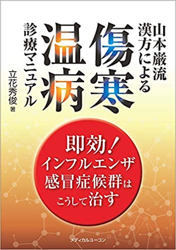
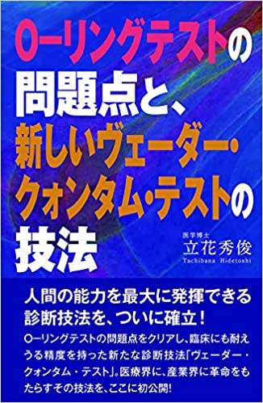

この度２０２０年７月１日 立花漢方内科小児科を開院いたしましたので、ご挨拶をさせていただきます。
西鶴崎の大分東署の近くで、日豊線の踏切の南側で、旧朝日生命ビルの2階です。
2階の窓からは、警察署、踏切が見えて、時々遮断機の音もして、のどかです。
私は昭和５１年山口大学を卒業し、１０年間小児科で大学生活を送りました。
専門は小児神経学でした。３４年前に大分岡病院に帰り、その後ずっと漢方治療の研修・学会発表などを行ってきました。
その後大分リハビリテーション病院に５年間勤務し、６９歳での開業となりましたが、体力は最近益々充実している感じがあり、漢方薬治療をもっと継続したいという思いがありました。
患者さんのほとんどは成人ですが、いろいろな不定愁訴に対処していきたいと考えています。
また子供たちが健やかな日々を送れるように努力したいと考えています。
私が力を入れているのは次の２点です。
① 漢方薬治療：
2019年10月に「インフルエンザに即効の漢方」の本を 上梓しました。
３３年間の漢方薬の集大成です。新型コロナ感染症にも十分に対処できます。
さらに大部分の疾患や症状に対して対応できるようにしています。
そして２５年前に大分で一番歴史の長い漢方サークルを継承し、毎月6，7人のドクターと一緒に抄読会を行い、研鑽を行っています。
② てんかん治療：
2020年6月に「O-RING テストの問題点と新しいヴェーダー・クォンタム・テストの技法」という本を出版しました。
てんかん患者さんも８０名近く診察していますが、この技法を使用し、発作消失率の向上に努めています。
ビルの2階のクリニックですが、駐車場は周りに十分に用意されて、道路は広く、周辺は比較的静かで、のんびりとしています。ご来院をお待ちしています。
略歴
1970年 大分県日田高校卒業
1976年 山口大学医学部卒業 小児科入局
1978年 鳥取大学脳神経 小児科留学
1985年 山口大学学位 誘発脳波についての研究
1986年 大分岡病院 小児科
2015年 大分リハビリテーション病院 漢方内科・小児科
2020年 立花漢方内科小児科 開院
著書
2019年 山本巌流漢方による傷寒・温病診療マニュアル2020年 O-リングテストの問題点と、新しいヴェーダー・クオンタム・テストの技法